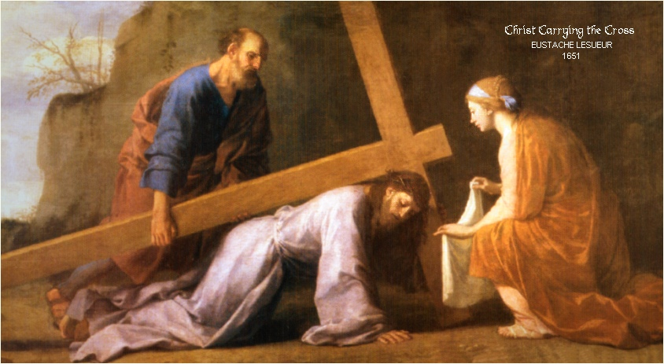

"AUXÍLIO AS ALMAS"
Podemos concretizar o nosso auxílio as Almas de diversas maneiras:
1 – Através da SANTA MISSA:
A Santa Missa é a principal oração e aquela que tem mais valor e um elevado poder de remissão. Assim sendo, encomendar Celebrações Eucarísticas e participar delas em benefício dos mortos, é uma providência caridosa que sensibiliza a misericórdia de DEUS, aliviando de modo preponderante as penas das Almas.
2 – Outras Orações Importantes:
Rezar o Terço,
assim como as orações
individuais : AVE MARIA, PAI NOSSO, SALVE RAINHA, CREDO, as JACULATÓRIAS
e outras, são preciosas providências que ajudam a amenizar as penas das Almas e podem ser
rezadas em qualquer lugar no horário que for mais favorável ao fiel.
: AVE MARIA, PAI NOSSO, SALVE RAINHA, CREDO, as JACULATÓRIAS
e outras, são preciosas providências que ajudam a amenizar as penas das Almas e podem ser
rezadas em qualquer lugar no horário que for mais favorável ao fiel.
A Via Sacra, é uma oração especial que inclusive exige um pouco de sacrifício e por isso mesmo, auxilia de modo efetivo na redução das penas.
3 – A Esmola:
Toda Esmola que for doada na intenção das almas, diminui as suas penas e normalmente beneficia três pessoas: o necessitado ou a organização que a recebeu, a pessoa que dá, e as Almas que padecem o “Purgatório” em cuja intenção se doou a Esmola. Todos recebem graças de DEUS.
4 – Obras de Penitência ou Mortificação:
Pequenas renúncias, como: privar-se de uma sobremesa, deixar de assistir a programas que lhe são favoritos na TV, reter um olhar inútil de curiosidade, manter o silêncio durante certo tempo, evitar uma palavra desnecessária, desviar o olhar de cenas licenciosas ou onde existe a provocação sexual, ter paciência com uma pessoa inoportuna, rezar ajoelhado sempre que possível, suportar o frio ou o calor sem reclamar, etc. Todas elas, são manifestações de amor e quando realizadas em benefício das Almas que estão na “Purificação”, contribuirá para a diminuição das penas.
5 – As Indulgências:
As Indulgências são obtidas pelo fiel em vida. Elas podem ser doadas ou dedicadas aos mortos. O Catecismo Oficial da Igreja ensina:
§1478 - A indulgência se obtém de DEUS mediante a Igreja, que, em virtude do poder de ligar e desligar, que CRISTO JESUS lhe concedeu, intervém em favor do cristão, abrindo-lhe o tesouro dos méritos de CRISTO e dos santos para obter do PAI das Misericórdias a remissão das penas temporais devidas aos seus pecados. Assim, a Igreja não só vem em auxílio do cristão, mas também o estimula a realizar obras de piedade, de penitência e de caridade.

§1498 - Pelas indulgências, os fiéis podem obter para si mesmos e também para as almas do Purgatório a remissão das penas temporais, consequências dos pecados.
O Catecismo de São Pio X nos ensina:
§793 – A Indulgência é a remissão da Pena Temporal devida, pelos pecados já perdoados quanto à “culpa”. Então é uma remissão que a Igreja concede fora do Sacramento da Penitência ou Confissão.
6 – Indulgências Especiais:
Por último, podemos acrescentar que também existem as Indulgências que são aplicáveis somente aos mortos. A visita ao Cemitério, em qualquer dia do ano, com ânimo religioso, para rezar pelos mortos, as pessoas alcançarão para as Almas Indulgências Parciais, que vão reduzir as suas penas. Se a visita ao Cemitério acontecer em Novembro, que é o mês consagrado as Almas, entre os dias 8 e 12, as Almas receberão Indulgência Plenária.
"CARTA DO PAPA JOÃO PAULO II"
 Em 2 de Junho de 1998, Sua Santidade
enviou uma Carta ao Bispo de Autum, Abade de Cluny, na França, pela celebração do
milênio (mil anos) de Comemoração da Festa dos Fiéis defuntos instituída por Santo
Odilon, quinto Abade de Cluny. (trechos
da carta)
Em 2 de Junho de 1998, Sua Santidade
enviou uma Carta ao Bispo de Autum, Abade de Cluny, na França, pela celebração do
milênio (mil anos) de Comemoração da Festa dos Fiéis defuntos instituída por Santo
Odilon, quinto Abade de Cluny. (trechos
da carta)
“Santo Odilon quis exortar os seus monges a orarem de maneira particular pelos mortos, contribuindo assim misteriosamente para o seu acesso à bem-aventurança; a partir da abadia de Cluny expandiu-se pouco a pouco o costume de interceder solenemente em favor dos defuntos, mediante uma celebração a que Santo Odilon chamou a “Festa dos Mortos”, prática hoje em vigor na Igreja universal”.
“Orando pelos mortos, a Igreja contempla antes de tudo o mistério da Ressurreição de CRISTO que, pela sua Cruz, nos obtém a salvação e a vida eterna. Deste modo, com Santo Odilon, podemos repetir sem cessar: «A Cruz é-me um refúgio, a Cruz é-me a via e a vida [...]. A Cruz é a minha arma invencível. A Cruz repele todo o mal. A Cruz dissipa as trevas». A Cruz do SENHOR recorda-nos que a vida inteira é habitada pela luz pascal, e jamais, situação alguma está totalmente perdida, pois CRISTO venceu a morte e nos abre o caminho da verdadeira vida. A redenção «realiza-se no sacrifício de CRISTO, pelo qual o homem resgata a dívida do pecado e fica reconciliado com DEUS”. (Tertio millennio adveniente)
“Na expectativa de que a morte seja definitivamente vencida, uns «peregrinam sobre a terra, outros, passada esta vida eles são purificados, outros, finalmente, são glorificados» e contemplam a Trindade na plena luz (Concílio Ecumênico Vaticano II, Lumen gentium, 49; cf. Eugenio IV, Bula Laetantur caeli). Unida aos méritos dos Santos, a nossa oração fraterna vai a socorro daqueles que estão à espera da Visão Beatífica. Tanto a intercessão pelos mortos como a vida dos vivos segundo os mandamentos divinos obtêm méritos, que servem para a plena realização da salvação. É uma expressão da caridade fraterna da única família de DEUS, pela qual «correspondemos à íntima vocação da Igreja»(Lumen gentium, 51): «salvar almas que amarão a DEUS eternamente» (Teresa de Lisieux, Orações, 6; cf. Manuscrito A 77 r°). Para as almas do purgatório, a espera da felicidade eterna, do encontro com o Bem-Amado, é fonte de sofrimentos por causa da pena devida ao pecado, que a mantém longe de DEUS. Mas há também a certeza de que, terminado o tempo de purificação, a alma irá ao encontro Daquele que ela deseja”. (cf. Sl 42 e 62).
 “As orações de intercessão e de súplica,
que a Igreja não cessa de dirigir à DEUS, têm um valor imenso. Elas são
«próprias dum coração conforme com a misericórdia
de DEUS» (Catecismo da Igreja Católica, n. 2635). O
SENHOR deixa-Se sempre tocar pelas súplicas de Seus filhos, pois é o DEUS dos
vivos. Durante a Eucaristia, mediante a oração universal e o memento
pelos defuntos, a comunidade reunida apresenta ao PAI de todas as misericórdias
aqueles que morreram, a fim de que, pela prova do purgatório, se esta lhes for
necessária, sejam purificados e cheguem à felicidade eterna. Ao confiarmo-los ao
SENHOR, reconhecemo-nos solidários com eles e participamos na sua salvação,
neste admirável mistério da Comunhão dos Santos. A Igreja acredita que as almas
que estão retidas no purgatório «são ajudadas
pela intercessão dos fiéis e sobretudo pelo sacrifício propiciatório do altar»
(Concílio de Trento, Decreto sobre o Purgatório), assim como
«pelas esmolas e as outras obras de piedade»
(Eugénio IV, Bula Laetantur caeli). «Com efeito, a própria santidade já vivida, que deriva
da participação na vida de santidade da Igreja, representa a primeira e fundamental
contribuição para a edificação da própria Igreja, como "Comunhão dos Santos"(Christifideles laici, 17).
“As orações de intercessão e de súplica,
que a Igreja não cessa de dirigir à DEUS, têm um valor imenso. Elas são
«próprias dum coração conforme com a misericórdia
de DEUS» (Catecismo da Igreja Católica, n. 2635). O
SENHOR deixa-Se sempre tocar pelas súplicas de Seus filhos, pois é o DEUS dos
vivos. Durante a Eucaristia, mediante a oração universal e o memento
pelos defuntos, a comunidade reunida apresenta ao PAI de todas as misericórdias
aqueles que morreram, a fim de que, pela prova do purgatório, se esta lhes for
necessária, sejam purificados e cheguem à felicidade eterna. Ao confiarmo-los ao
SENHOR, reconhecemo-nos solidários com eles e participamos na sua salvação,
neste admirável mistério da Comunhão dos Santos. A Igreja acredita que as almas
que estão retidas no purgatório «são ajudadas
pela intercessão dos fiéis e sobretudo pelo sacrifício propiciatório do altar»
(Concílio de Trento, Decreto sobre o Purgatório), assim como
«pelas esmolas e as outras obras de piedade»
(Eugénio IV, Bula Laetantur caeli). «Com efeito, a própria santidade já vivida, que deriva
da participação na vida de santidade da Igreja, representa a primeira e fundamental
contribuição para a edificação da própria Igreja, como "Comunhão dos Santos"(Christifideles laici, 17).
“Encorajo, pois, os católicos a orarem com fervor pelos defuntos, por aqueles das suas famílias e por todos os nossos irmãos e irmãs que morreram, a fim de obterem a remissão das penas devidas aos seus pecados e ouvirem o apelo do SENHOR: «Vem ó minha alma querida, ao repouso eterno entre os braços da Minha bondade, que te preparou as delícias eternas» (Francisco de Sales, Introdução à vida devota, 17, 4).
“Ao confiar à intercessão de Nossa Senhora, de Santo Odilon e de São José, Padroeiro da boa morte, os fiéis que rezarem pelos mortos, lhes concedo de todo o coração a minha Bênção Apostólica, assim como aos membros da comunidade diocesana de Autun, aos que estão inscritos na Arquiconfraria de Nossa Senhora de Cluny e aos leitores do Boletim Lumière et Vie. De bom grado faço a minha Bênção extensiva a todos os que, durante este ano do milênio, orarem pelas almas do purgatório, participarem na Eucaristia e oferecerem sacrifícios pelos defuntos”.